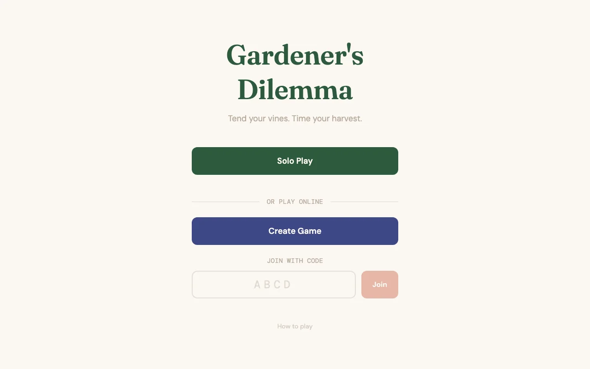
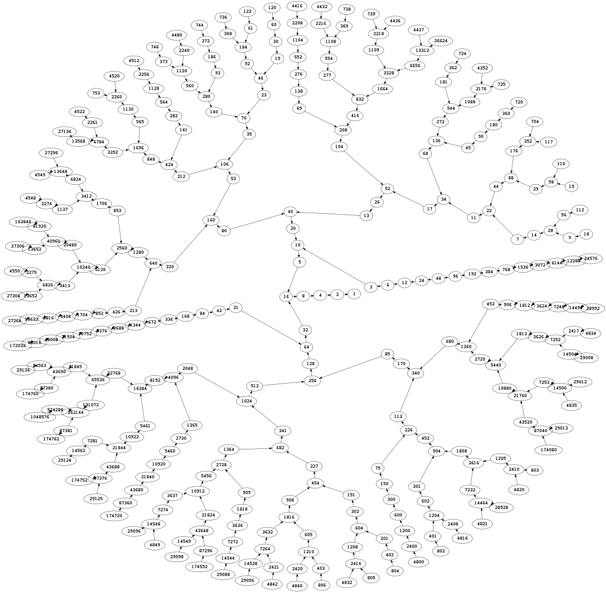
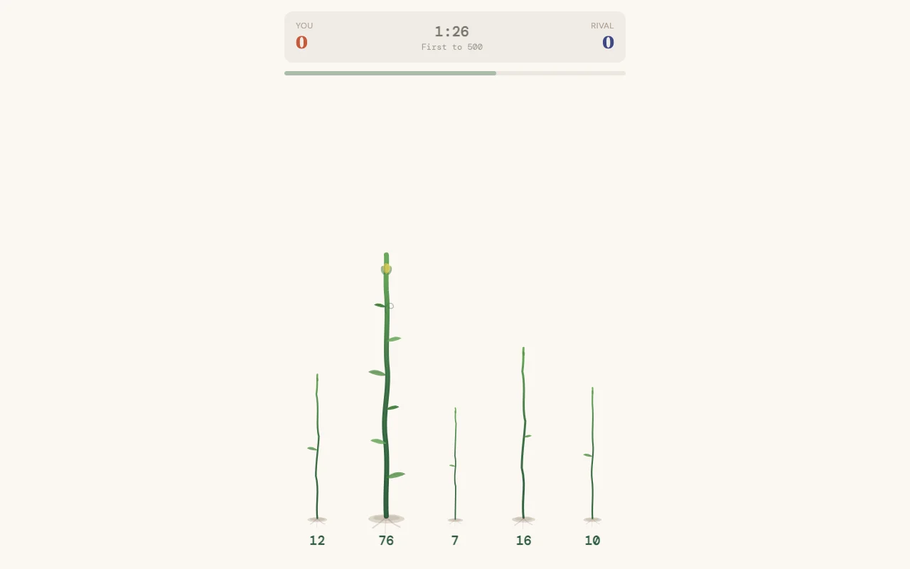

The Collatz conjecture is one of the simplest unsolved problems in mathematics. Take any positive integer \(n\). If it's even, divide by 2. If it's odd, multiply by 3 and add 1. Repeat. The conjecture says you always reach 1, regardless of starting value. Nobody has proved it, but it has been verified for all integers up to \(2^{68}\). This project turns the conjecture into a competitive two-player game where the Collatz sequence is the clock, the terrain, and the scoring mechanism all at once.

{kind=link}
The Collatz step
The core operation is the Collatz function \(C: \mathbb{N} \to \mathbb{N}\):
\[C(n) = \begin{cases} n/2 & \text{if } n \equiv 0 \pmod{2} \\ 3n + 1 & \text{if } n \equiv 1 \pmod{2} \end{cases}\]The stopping time of \(n\) is the number of iterations needed to reach 1. For example, starting at 7: \(7 \to 22 \to 11 \to 34 \to 17 \to 52 \to 26 \to 13 \to 40 \to 20 \to 10 \to 5 \to 16 \to 8 \to 4 \to 2 \to 1\), a stopping time of 16. Starting at 6: \(6 \to 3 \to 10 \to 5 \to 16 \to 8 \to 4 \to 2 \to 1\), a stopping time of 8. The key observation for the game is that these sequences overlap: 6's path passes through 10, and so does 7's. If you harvest a vine at 10, and the next vine you pick also appears somewhere in 10's future trajectory, that's a chain.

Vines and ticking
The game board consists of 5 vines, each labeled with a number drawn from the range [3, 25]. Every 2.5 seconds, each vine advances one Collatz step: its value is replaced by \(C(\text{value})\). A vine at 7 becomes 22, then 11, then 34, and so on. When a vine's value reaches 1, it withers and is replaced by a new random vine.
Vine candidates are filtered by excluding powers of two, since they collapse to 1 too quickly (a vine at 16 would wither in just 4 ticks: \(16 \to 8 \to 4 \to 2 \to 1\)). The power-of-two check uses the standard bitwise trick:
\[\text{isPow2}(n) = (n > 0) \wedge \bigl(n \mathbin{\&} (n - 1) = 0\bigr)\]This works because a power of two has a single bit set in binary, so subtracting 1 flips that bit and all lower bits, making the AND zero. The excluded values in [3, 25] are 4, 8, and 16, leaving 20 valid candidates. Since the board holds 5 vines at a time and enforces uniqueness, each round draws from this pool without replacement.
Chain scoring
Harvesting a vine scores its current value in points. But the real mechanic is chaining. If the vine you just harvested is reachable from your previous harvest's value via the Collatz sequence, it extends your chain. The chain multiplier scales linearly with chain length:
\[m = 1 + 0.5 \cdot \ell\]where \(\ell\) is the current chain length. A standalone harvest scores raw value at \(m = 1\). Two chained harvests give the second one a \(1.5\times\) multiplier. Three in a row give the third \(2\times\), and so on. The total score from a chain of \(k\) harvests with values \(v_1, v_2, \ldots, v_k\) is:
\[\sum_{i=1}^{k} v_i \cdot (1 + 0.5 \cdot (i - 1))\]Chain detection looks ahead up to 25 Collatz steps from the last harvested value to build a set of reachable numbers. If the candidate vine's value is in that set, the chain extends. First to 500 points wins, or highest score after 90 seconds. There is a 3-second cooldown between harvests, so the strategic tension is between harvesting a high-value vine now versus waiting for a chain-connected vine that might yield more through the multiplier.
AI opponents
Solo mode offers three AI tiers, each representing a different tradeoff between reaction speed, chain awareness, and strategic depth.
Seedling acts every 1.5 to 3 seconds and has a 30% chance of doing nothing each turn. When it does act, it picks a random vine. No chain awareness, no value comparison. It plays like a distracted beginner.
Gardener acts every 0.8 to 2 seconds with a 15% skip rate. It knows about chains: when chain-connected vines exist, it takes the highest-value one 60% of the time. Otherwise it falls back to the highest raw value. It's greedy but not strategic about when to break a chain for a better standalone harvest.
Botanist acts every 0.3 to 1 second and skips only 5% of the time. It evaluates whether extending the chain is actually worth more than breaking it for a high raw value. The decision rule compares the chain-extended value against the best standalone option:
\[\text{if } v_{\text{chain}} \cdot (1 + 0.5(\ell + 1)) > v_{\text{raw}} \implies \text{extend chain}\]When the multiplied chain value doesn't beat the best raw vine, the Botanist still takes the chain 30% of the time as a speculative play, gambling that a longer chain will pay off later. This mirrors a real strategic consideration: sometimes maintaining a chain at a small short-term cost is worth the compounding multiplier over subsequent harvests.
Multiplayer
Online multiplayer runs on PartyKit, which provides WebSocket rooms backed by Cloudflare Durable Objects. The server owns the game state (vines, scores, cooldown timers, chain state) and broadcasts updates on every mutation. Vine ticks happen server-side every 2.5 seconds, and a separate clock timer decrements the remaining time every second. Harvest requests are validated server-side: the server checks that the vine is alive and that the player's cooldown has elapsed before processing.
The cooldown is tracked as a pair of Unix timestamps, one per player slot. A harvest is allowed when \(\text{now} \geq \text{cooldownUntil}[\text{player}]\), and after a successful harvest the timestamp advances by 3,000 ms. This avoids issues with timer drift across clients, since the server is the single source of truth for timing.
The front end
Built with SvelteKit 2 and Svelte 5, deployed on Cloudflare Pages. The vine animations and tick progress indicators are CSS-driven to avoid layout thrash from JavaScript-animated DOM updates. The game logic package is shared between the web client, the solo AI, and the PartyKit server, so the Collatz step, chain detection, and scoring are identical across all three contexts.